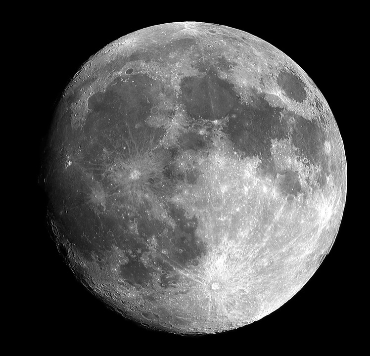

Earth, our home, is the third planet from the sun. It is the only planet known to have an atmosphere containing free oxygen, oceans of liquid water on its surface, and, of course, life.
Jupiter helped revolutionize the way we saw the universe and ourselves in 1610, when Galileo discovered Jupiter's four large moons — Io, Europa, Ganymede and Callisto, now known as the Galilean moons. This was the first
time that celestial bodies were seen circling an object other than Earth, major support of the Copernican view that Earth was not the center of the univers

The moon is the easiest celestial object to find in the night sky — when it's there. Earth's only natural satellite hovers above us bright
and round until it seemingly disappears for a few nights. The rhythm of the moon's phases has guided humanity for millennia — for instance,
calendar months are roughly equal to the time it takes to go from one full moon to the next.
Moon phases and the moon's orbit are mysteries to many. For example, the moon always shows us the same face. That happens because it takes 27.3 days
both to rotate on its axis and to orbit Earth. We see either the full moon, half moon or no moon (new moon)
because the moon reflects sunlight. How much of it we see depends on the moon's position in relation to Earth and the sun.

Mars has been known since prehistoric times. Of course, it has been extensively studied with ground-based observatories. But even very
large telescopes find Mars a difficult target, it's just too small. It is still a favorite of science fiction writers as the most favorable
place in the Solar System (other than Earth!) for human habitation. But the famous "canals" "seen" by Lowell and others were, unfortunately, just
as imaginary as Barsoomian princesses.
Mars' orbit is significantly elliptical. One result of this is a temperature variation of about 30 C at the subsolar point between aphelion
and perihelion. This has a major influence on Mars' climate. While the average temperature on Mars is about 218 K (-55 C, -67 F), Martian surface
temperatures range widely from as little as 140 K (-133 C, -207 F) at the winter pole to almost 300 K (27 C, 80 F) on the day side during summer.